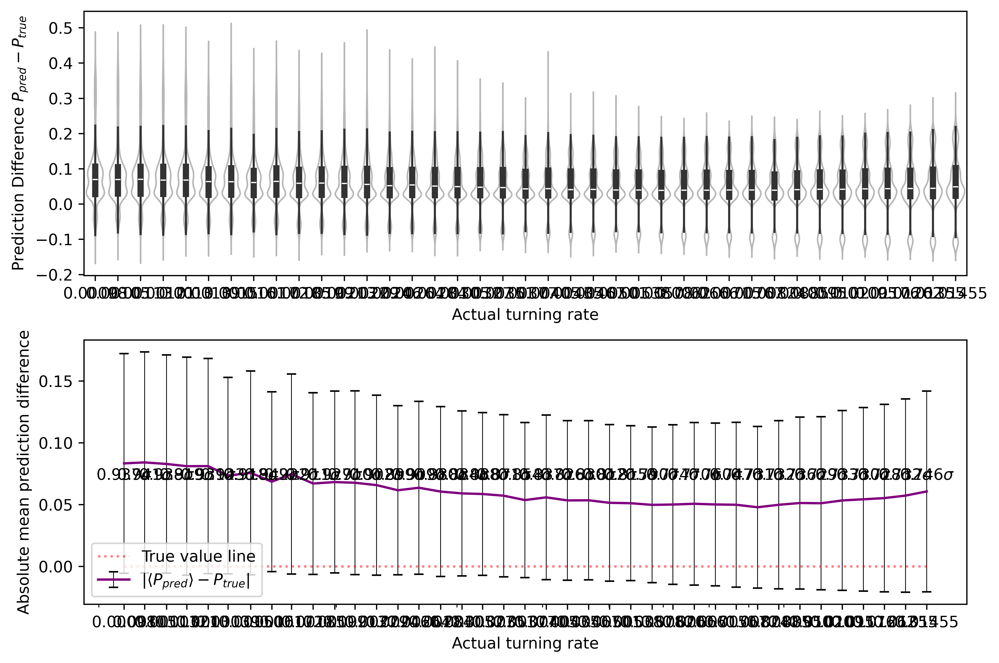

import numpy as npimport h5pyimport globimport reimport tensorflow as tfimport matplotlib.pyplot as pltimport matplotlib.ticker as tickerfrom scipy.stats import pearsonrimport syssys.path.append('./..')from src.training_utils import data_load, extract_floats, split_dataset, predict_multi_by_name, plot_violin_and_statistics,cross_mean_err_calculatorfrom tensorflow import kerasfrom keras import backend as Kfrom tensorflow.keras.models import Sequentialfrom tensorflow.keras.layers import Dense,Conv2D,Flatten,Dropout,MaxPooling2D,BatchNormalization,AveragePooling2D,LeakyReLU,GlobalAveragePooling2D,ReLUfrom cmcrameri import cmimport seaborn as snsimport pandas as pdnp.set_printoptions(precision=3, suppress=True) #set precision to 5 when running lower bound extrapolation, otherwise it won't be able to read the datasets!
2024-04-16 13:02:10.900667: I tensorflow/core/util/port.cc:113] oneDNN custom operations are on. You may see slightly different numerical results due to floating-point round-off errors from different computation orders. To turn them off, set the environment variable `TF_ENABLE_ONEDNN_OPTS=0`.
2024-04-16 13:02:12.200282: I tensorflow/core/platform/cpu_feature_guard.cc:210] This TensorFlow binary is optimized to use available CPU instructions in performance-critical operations.
To enable the following instructions: AVX2 AVX_VNNI FMA, in other operations, rebuild TensorFlow with the appropriate compiler flags.
2024-04-16 13:02:13.607396: W tensorflow/compiler/tf2tensorrt/utils/py_utils.cc:38] TF-TRT Warning: Could not find TensorRT
Set seed (optional)
fixed_seed =216#choose seed (comment out if not needed)if'fixed_seed'inlocals(): keras.utils.set_random_seed(fixed_seed)print("Running program with fixed seed:",fixed_seed)else:print("Running program with random seed.")
Running program with fixed seed: 216
Setup GPU
First, follow instructions here, or alternatively run:
for a in /sys/bus/pci/devices/*;doecho 0 |sudo tee -a$a/numa_node;done
2024-04-16 13:02:17.503910: I external/local_xla/xla/stream_executor/cuda/cuda_executor.cc:998] successful NUMA node read from SysFS had negative value (-1), but there must be at least one NUMA node, so returning NUMA node zero. See more at https://github.com/torvalds/linux/blob/v6.0/Documentation/ABI/testing/sysfs-bus-pci#L344-L355
2024-04-16 13:02:18.122505: I external/local_xla/xla/stream_executor/cuda/cuda_executor.cc:998] successful NUMA node read from SysFS had negative value (-1), but there must be at least one NUMA node, so returning NUMA node zero. See more at https://github.com/torvalds/linux/blob/v6.0/Documentation/ABI/testing/sysfs-bus-pci#L344-L355
2024-04-16 13:02:18.122771: I external/local_xla/xla/stream_executor/cuda/cuda_executor.cc:998] successful NUMA node read from SysFS had negative value (-1), but there must be at least one NUMA node, so returning NUMA node zero. See more at https://github.com/torvalds/linux/blob/v6.0/Documentation/ABI/testing/sysfs-bus-pci#L344-L355
2024-04-16 13:02:18.127796: I external/local_xla/xla/stream_executor/cuda/cuda_executor.cc:998] successful NUMA node read from SysFS had negative value (-1), but there must be at least one NUMA node, so returning NUMA node zero. See more at https://github.com/torvalds/linux/blob/v6.0/Documentation/ABI/testing/sysfs-bus-pci#L344-L355
2024-04-16 13:02:18.128061: I external/local_xla/xla/stream_executor/cuda/cuda_executor.cc:998] successful NUMA node read from SysFS had negative value (-1), but there must be at least one NUMA node, so returning NUMA node zero. See more at https://github.com/torvalds/linux/blob/v6.0/Documentation/ABI/testing/sysfs-bus-pci#L344-L355
2024-04-16 13:02:18.128265: I external/local_xla/xla/stream_executor/cuda/cuda_executor.cc:998] successful NUMA node read from SysFS had negative value (-1), but there must be at least one NUMA node, so returning NUMA node zero. See more at https://github.com/torvalds/linux/blob/v6.0/Documentation/ABI/testing/sysfs-bus-pci#L344-L355
2024-04-16 13:02:18.318392: I external/local_xla/xla/stream_executor/cuda/cuda_executor.cc:998] successful NUMA node read from SysFS had negative value (-1), but there must be at least one NUMA node, so returning NUMA node zero. See more at https://github.com/torvalds/linux/blob/v6.0/Documentation/ABI/testing/sysfs-bus-pci#L344-L355
2024-04-16 13:02:18.318587: I external/local_xla/xla/stream_executor/cuda/cuda_executor.cc:998] successful NUMA node read from SysFS had negative value (-1), but there must be at least one NUMA node, so returning NUMA node zero. See more at https://github.com/torvalds/linux/blob/v6.0/Documentation/ABI/testing/sysfs-bus-pci#L344-L355
2024-04-16 13:02:18.318726: I external/local_xla/xla/stream_executor/cuda/cuda_executor.cc:998] successful NUMA node read from SysFS had negative value (-1), but there must be at least one NUMA node, so returning NUMA node zero. See more at https://github.com/torvalds/linux/blob/v6.0/Documentation/ABI/testing/sysfs-bus-pci#L344-L355
2024-04-16 13:02:18.319151: I tensorflow/core/common_runtime/gpu/gpu_device.cc:1928] Created device /device:GPU:0 with 6188 MB memory: -> device: 0, name: NVIDIA GeForce RTX 4060 Laptop GPU, pci bus id: 0000:01:00.0, compute capability: 8.9
Define Functions
def violin_plotter (v,y_val,adjustment,legloc="upper left"): bins = np.logspace(-6,-1,10, base=2)*0.85#v = prediction2.T[0] colors = cm.batlowS(np.digitize(v, bins)) colors_actual = cm.batlowS(np.digitize(np.unique(y_val),bins)) fig, (ax1,ax2) = plt.subplots(nrows=2,ncols=1,figsize=(9,6),dpi=600) df = pd.DataFrame() df.insert(0, "predicted", v - y_val) df.insert(1, "actual", y_val) sns.violinplot( ax=ax1, data=df, x="actual", y="predicted", color="w", alpha=0.7, density_norm="width", linewidth=1, inner="box", inner_kws={"box_width": 4, "color": "0.2"}, ) ax1.set_xlabel("Actual turning rate") ax1.set_ylabel(r"Prediction Difference $P_{pred}-P_{true}$") std = [] means = [] overlap = [] std_div = [] accuracy =5e-3print ("Prediction means and standard deviations.")for val in np.unique(y_val): v_mapped = v[np.where(y_val == val)] stdev = np.std(v_mapped) std.append(stdev) mean = np.mean(v_mapped) overlap.append((val + accuracy >= np.min(v_mapped)) & (val - accuracy <= np.max(v_mapped))) within_std =abs(val-mean)/stdevprint (f"Actual value {val}: Average = {mean:.5f} +- {stdev:.5f}; Expected value within {within_std:.3f} stdevs of mean") std_div.append(within_std)print(f"With accuracy {accuracy}, overlap ratio:", np.sum(overlap)/len(overlap))print("(Min, Max, Avg) STD:", np.min(std), np.max(std), np.mean(std))print("Pearson's correlation coeff: ", pearsonr(y_val, v).statistic)for val in np.unique(y_val): v_mapped = v[np.where(y_val == val)] means.append(np.mean(v_mapped)) ax2.errorbar(np.sort(np.unique(y_val)),np.abs(means-np.sort(np.unique(y_val))),yerr=(std),ecolor='black',elinewidth=0.5,capsize=3,color='purple',label=r'$|\langle P_{pred} \rangle -P_{true}|$') ax2.plot(np.sort(np.unique(y_val)),np.zeros(np.unique(y_val).shape[0]),color='red',label='True value line',linestyle='dotted',alpha=0.5) ax2.legend(loc=legloc) counter =0for i in np.sort(np.unique(y_val)): ax2.text(i,adjustment,f"${std_div[counter]:.3f} \sigma$",ha="center") counter = counter +1 ax2.set_xscale("log") ax2.get_xaxis().set_major_formatter(ticker.ScalarFormatter()) ax2.set_xticks(np.unique(y_val)) ax2.set_xlabel("Actual turning rate") ax2.set_ylabel("Absolute mean prediction difference") fig.tight_layout()
Import and prepare data
set model1 to have orientation, model2 to be monochrome, model3 to be scrambled
#all alphas: [0.016,0.023,0.034,0.050,0.073,0.107,0.157,0.231,0.340,0.500]#NOTE: we're using interpolation alphas below, so the loaded alphas should be the midpoints of the above!#all densities: [0.05,0.10,0.15,0.20,0.25,0.30,0.35,0.40,0.45,0.50,0.55,0.60,0.65,0.70,0.75,0.80,0.85,0.90,0.95]#MIDWAY INTERPOLATION alphas=[0.019,0.028,0.042,0.061,0.090,0.132,0.194,0.286,0.420]#MORE ARBITRARY INTERPOLATION alphas = [0.017,0.019,0.020,0.022,0.024,0.027,0.029,0.032,0.035,0.038,0.042,0.045,0.054,0.059,0.065,0.071,0.077,0.085,0.092,0.101,0.110,0.121,0.132,0.144,0.172,0.188,0.206,0.225,0.246,0.268,0.293,0.321,0.350,0.383,0.419,0.457]#LOW EXTRAPOLATION alphas= np.around([0.0009765625,0.0010485156443048034,0.001125770297704363,0.0012087170754935827,0.0012977753735100123,0.0013933954886848076,0.0014960608958359115,0.0016062906922154109,0.0017246422221711894,0.0018517138951936946,0.001988148211596466,0.0021346350111288433,0.0022919149609465345,0.002460783300575925,0.0026420938628074157,0.0028367633908482908,0.0030457761735634683,0.0032701890222408933,0.0035111366140450867,0.003769837229176494,0.004047598910744807,0.0043458260785019,0.004666026629874729,0.00500981956420247,0.005378943168727615,0.005775263807731052,0.006200785359250777,0.006657659347098239,0.007148195819401841,0.007674875028681752,0.008240359972512863,0.008847509858184024,0.009499394559433653,0.01019931013835789,0.010950795510973272,0.011757650340698408,0.012623954250227692,0.013554087448936302,0.014552752880112747],decimals=5)#HIGH EXTRAPOLATION alphas= [0.509,0.518,0.527,0.537,0.546,0.556,0.566,0.576,0.587,0.597,0.608,0.619,0.630,0.641,0.653,0.664,0.676,0.689,0.701,0.71,0.726,0.739,0.752,0.766,0.780,0.794,0.808,0.822,0.837,0.852,0.867,0.883,0.899,0.915,0.931,0.948,0.965,0.982,1.000]alpha_list = np.around([0.0009765625,0.0010485156443048034,0.001125770297704363,0.0012087170754935827,0.0012977753735100123,0.0013933954886848076,0.0014960608958359115,0.0016062906922154109,0.0017246422221711894,0.0018517138951936946,0.001988148211596466,0.0021346350111288433,0.0022919149609465345,0.002460783300575925,0.0026420938628074157,0.0028367633908482908,0.0030457761735634683,0.0032701890222408933,0.0035111366140450867,0.003769837229176494,0.004047598910744807,0.0043458260785019,0.004666026629874729,0.00500981956420247,0.005378943168727615,0.005775263807731052,0.006200785359250777,0.006657659347098239,0.007148195819401841,0.007674875028681752,0.008240359972512863,0.008847509858184024,0.009499394559433653,0.01019931013835789,0.010950795510973272,0.011757650340698408,0.012623954250227692,0.013554087448936302,0.014552752880112747],decimals=5)print(alpha_list)x1,y1,shape1 = data_load(alphas = alpha_list, densities=[0.25],orientation=True,scrambled=False,path=f"../data/no-rolling/low-extrapolation-set/")x2,y2,shape2 = data_load(alphas = alpha_list, densities=[0.25],orientation=False,scrambled=False,path=f"../data/no-rolling/low-extrapolation-set/")x3,y3,shape3 = data_load(alphas = alpha_list, densities=[0.25],orientation=False,scrambled=True,path=f"../data/no-rolling/low-extrapolation-set/")
We have N * number of unique alpha snapshots total, we split them into training set and a validation set with the ratio 80/20:
print("Orientation model:")x_train1, y_train1, x_val1, y_val1 = split_dataset(x1,y1,last=int(len(x1)*1)) #len(x)*1 means no training, only validation!x_train2, y_train2, x_val2, y_val2 = split_dataset(x2,y2,last=int(len(x1)*1)) #len(x)*1 means no training, only validation!x_train3, y_train3, x_val3, y_val3 = split_dataset(x3,y3,last=int(len(x1)*1)) #len(x)*1 means no training, only validation!
Orientation model:
Number of unique alpha: 39
Shape of x: (39000, 128, 128, 1)
Shape of y: (39000,)
Size of training data: 0
Size of validation data: 39000
Number of unique alpha: 39
Shape of x: (39000, 128, 128, 1)
Shape of y: (39000,)
Size of training data: 0
Size of validation data: 39000
Number of unique alpha: 39
Shape of x: (39000, 128, 128, 1)
Shape of y: (39000,)
Size of training data: 0
Size of validation data: 39000
models_one = ['orientation0216','orientation0226','orientation0236','orientation0246','orientation0256','orientation0266','orientation0276','orientation0286','orientation0296','orientation0306'] #array of model namesmodels_two = ['monochrome0216','monochrome0226','monochrome0236','monochrome0246','monochrome0256','monochrome0266','monochrome0276','monochrome0286','monochrome0296','monochrome0306'] # array of model namesmodels_three = ['scrambled0216','scrambled0226','scrambled0236','scrambled0246','scrambled0256','scrambled0266','scrambled0276','scrambled0286','scrambled0296','scrambled0306'] # array of model namesone_pred_of_one, one_actuals_of_one = predict_multi_by_name(models_one,x_val1,y_val1)one_pred_of_two, one_actuals_of_two = predict_multi_by_name(models_one,x_val2,y_val2)one_pred_of_three, one_actuals_of_three = predict_multi_by_name(models_one,x_val3,y_val3)two_pred_of_two, two_actuals_of_two = predict_multi_by_name(models_two,x_val2,y_val2)two_pred_of_one, two_actuals_of_one = predict_multi_by_name(models_two,x_val1,y_val1)two_pred_of_three, two_actuals_of_three = predict_multi_by_name(models_two,x_val3,y_val3)three_pred_of_three, three_actuals_of_three = predict_multi_by_name(models_three,x_val3,y_val3)three_pred_of_one, three_actuals_of_one = predict_multi_by_name(models_three,x_val1,y_val1)three_pred_of_two, three_actuals_of_two = predict_multi_by_name(models_three,x_val2,y_val2)
2024-04-16 13:02:52.008857: I external/local_xla/xla/stream_executor/cuda/cuda_executor.cc:998] successful NUMA node read from SysFS had negative value (-1), but there must be at least one NUMA node, so returning NUMA node zero. See more at https://github.com/torvalds/linux/blob/v6.0/Documentation/ABI/testing/sysfs-bus-pci#L344-L355
2024-04-16 13:02:52.009050: I external/local_xla/xla/stream_executor/cuda/cuda_executor.cc:998] successful NUMA node read from SysFS had negative value (-1), but there must be at least one NUMA node, so returning NUMA node zero. See more at https://github.com/torvalds/linux/blob/v6.0/Documentation/ABI/testing/sysfs-bus-pci#L344-L355
2024-04-16 13:02:52.009105: I external/local_xla/xla/stream_executor/cuda/cuda_executor.cc:998] successful NUMA node read from SysFS had negative value (-1), but there must be at least one NUMA node, so returning NUMA node zero. See more at https://github.com/torvalds/linux/blob/v6.0/Documentation/ABI/testing/sysfs-bus-pci#L344-L355
2024-04-16 13:02:52.009200: I external/local_xla/xla/stream_executor/cuda/cuda_executor.cc:998] successful NUMA node read from SysFS had negative value (-1), but there must be at least one NUMA node, so returning NUMA node zero. See more at https://github.com/torvalds/linux/blob/v6.0/Documentation/ABI/testing/sysfs-bus-pci#L344-L355
2024-04-16 13:02:52.009260: I external/local_xla/xla/stream_executor/cuda/cuda_executor.cc:998] successful NUMA node read from SysFS had negative value (-1), but there must be at least one NUMA node, so returning NUMA node zero. See more at https://github.com/torvalds/linux/blob/v6.0/Documentation/ABI/testing/sysfs-bus-pci#L344-L355
2024-04-16 13:02:52.009317: I tensorflow/core/common_runtime/gpu/gpu_device.cc:1928] Created device /job:localhost/replica:0/task:0/device:GPU:0 with 6188 MB memory: -> device: 0, name: NVIDIA GeForce RTX 4060 Laptop GPU, pci bus id: 0000:01:00.0, compute capability: 8.9
WARNING: All log messages before absl::InitializeLog() is called are written to STDERR
I0000 00:00:1713268975.456310 73896 service.cc:145] XLA service 0x7577b0003c30 initialized for platform CUDA (this does not guarantee that XLA will be used). Devices:
I0000 00:00:1713268975.456434 73896 service.cc:153] StreamExecutor device (0): NVIDIA GeForce RTX 4060 Laptop GPU, Compute Capability 8.9
2024-04-16 13:02:55.462404: I tensorflow/compiler/mlir/tensorflow/utils/dump_mlir_util.cc:268] disabling MLIR crash reproducer, set env var `MLIR_CRASH_REPRODUCER_DIRECTORY` to enable.
2024-04-16 13:02:55.500458: I external/local_xla/xla/stream_executor/cuda/cuda_dnn.cc:465] Loaded cuDNN version 8907
I0000 00:00:1713268976.125776 73896 device_compiler.h:188] Compiled cluster using XLA! This line is logged at most once for the lifetime of the process.
Prediction means and standard deviations.
Actual value 0.00098: Average = 0.08768 +- 0.08044; Expected value within 1.078 stdevs of mean
Actual value 0.00105: Average = 0.09190 +- 0.08411; Expected value within 1.080 stdevs of mean
Actual value 0.00113: Average = 0.08831 +- 0.08035; Expected value within 1.085 stdevs of mean
Actual value 0.00121: Average = 0.08439 +- 0.07548; Expected value within 1.102 stdevs of mean
Actual value 0.0013: Average = 0.08477 +- 0.07560; Expected value within 1.104 stdevs of mean
Actual value 0.00139: Average = 0.07639 +- 0.06910; Expected value within 1.085 stdevs of mean
Actual value 0.0015: Average = 0.07906 +- 0.07357; Expected value within 1.054 stdevs of mean
Actual value 0.00161: Average = 0.07298 +- 0.06640; Expected value within 1.075 stdevs of mean
Actual value 0.00172: Average = 0.07547 +- 0.06834; Expected value within 1.079 stdevs of mean
Actual value 0.00185: Average = 0.06422 +- 0.05615; Expected value within 1.111 stdevs of mean
Actual value 0.00199: Average = 0.06524 +- 0.05801; Expected value within 1.090 stdevs of mean
Actual value 0.00213: Average = 0.06308 +- 0.05599; Expected value within 1.089 stdevs of mean
Actual value 0.00229: Average = 0.05808 +- 0.05111; Expected value within 1.092 stdevs of mean
Actual value 0.00246: Average = 0.05344 +- 0.04662; Expected value within 1.093 stdevs of mean
Actual value 0.00264: Average = 0.05654 +- 0.05026; Expected value within 1.073 stdevs of mean
Actual value 0.00284: Average = 0.04901 +- 0.04295; Expected value within 1.075 stdevs of mean
Actual value 0.00305: Average = 0.04816 +- 0.03956; Expected value within 1.140 stdevs of mean
Actual value 0.00327: Average = 0.04509 +- 0.03657; Expected value within 1.143 stdevs of mean
Actual value 0.00351: Average = 0.04192 +- 0.03307; Expected value within 1.162 stdevs of mean
Actual value 0.00377: Average = 0.03718 +- 0.02724; Expected value within 1.227 stdevs of mean
Actual value 0.00405: Average = 0.03654 +- 0.02654; Expected value within 1.224 stdevs of mean
Actual value 0.00435: Average = 0.03317 +- 0.02223; Expected value within 1.296 stdevs of mean
Actual value 0.00467: Average = 0.03312 +- 0.02286; Expected value within 1.245 stdevs of mean
Actual value 0.00501: Average = 0.03045 +- 0.01909; Expected value within 1.333 stdevs of mean
Actual value 0.00538: Average = 0.02993 +- 0.01755; Expected value within 1.398 stdevs of mean
Actual value 0.00578: Average = 0.02725 +- 0.01450; Expected value within 1.480 stdevs of mean
Actual value 0.0062: Average = 0.02595 +- 0.01241; Expected value within 1.592 stdevs of mean
Actual value 0.00666: Average = 0.02505 +- 0.01108; Expected value within 1.660 stdevs of mean
Actual value 0.00715: Average = 0.02400 +- 0.00959; Expected value within 1.757 stdevs of mean
Actual value 0.00767: Average = 0.02378 +- 0.00915; Expected value within 1.760 stdevs of mean
Actual value 0.00824: Average = 0.02334 +- 0.00913; Expected value within 1.653 stdevs of mean
Actual value 0.00885: Average = 0.02294 +- 0.00828; Expected value within 1.702 stdevs of mean
Actual value 0.0095: Average = 0.02327 +- 0.00814; Expected value within 1.692 stdevs of mean
Actual value 0.0102: Average = 0.02284 +- 0.00748; Expected value within 1.690 stdevs of mean
Actual value 0.01095: Average = 0.02307 +- 0.00720; Expected value within 1.683 stdevs of mean
Actual value 0.01176: Average = 0.02293 +- 0.00695; Expected value within 1.606 stdevs of mean
Actual value 0.01262: Average = 0.02334 +- 0.00689; Expected value within 1.555 stdevs of mean
Actual value 0.01355: Average = 0.02357 +- 0.00662; Expected value within 1.513 stdevs of mean
Actual value 0.01455: Average = 0.02387 +- 0.00659; Expected value within 1.413 stdevs of mean
With accuracy 0.005, overlap ratio: 1.0
(Min, Max, Avg) STD: 0.0065941187 0.08411038 0.03598006
Pearson's correlation coeff: -0.3789355713537812
Prediction means and standard deviations.
Actual value 0.00098: Average = 0.09439 +- 0.09741; Expected value within 0.959 stdevs of mean
Actual value 0.00105: Average = 0.09549 +- 0.09778; Expected value within 0.966 stdevs of mean
Actual value 0.00113: Average = 0.09408 +- 0.09640; Expected value within 0.964 stdevs of mean
Actual value 0.00121: Average = 0.09148 +- 0.09509; Expected value within 0.949 stdevs of mean
Actual value 0.0013: Average = 0.09150 +- 0.09408; Expected value within 0.959 stdevs of mean
Actual value 0.00139: Average = 0.08393 +- 0.08748; Expected value within 0.944 stdevs of mean
Actual value 0.0015: Average = 0.08654 +- 0.08995; Expected value within 0.945 stdevs of mean
Actual value 0.00161: Average = 0.07968 +- 0.08180; Expected value within 0.954 stdevs of mean
Actual value 0.00172: Average = 0.08490 +- 0.08815; Expected value within 0.944 stdevs of mean
Actual value 0.00185: Average = 0.07739 +- 0.08086; Expected value within 0.934 stdevs of mean
Actual value 0.00199: Average = 0.07831 +- 0.08089; Expected value within 0.943 stdevs of mean
Actual value 0.00213: Average = 0.07777 +- 0.08135; Expected value within 0.930 stdevs of mean
Actual value 0.00229: Average = 0.07593 +- 0.08005; Expected value within 0.920 stdevs of mean
Actual value 0.00246: Average = 0.07239 +- 0.07594; Expected value within 0.921 stdevs of mean
Actual value 0.00264: Average = 0.07407 +- 0.07724; Expected value within 0.925 stdevs of mean
Actual value 0.00284: Average = 0.07151 +- 0.07552; Expected value within 0.909 stdevs of mean
Actual value 0.00305: Average = 0.07040 +- 0.07402; Expected value within 0.910 stdevs of mean
Actual value 0.00327: Average = 0.06981 +- 0.07312; Expected value within 0.910 stdevs of mean
Actual value 0.00351: Average = 0.06868 +- 0.07256; Expected value within 0.898 stdevs of mean
Actual value 0.00377: Average = 0.06610 +- 0.06944; Expected value within 0.898 stdevs of mean
Actual value 0.00405: Average = 0.06812 +- 0.07242; Expected value within 0.885 stdevs of mean
Actual value 0.00435: Average = 0.06624 +- 0.07020; Expected value within 0.882 stdevs of mean
Actual value 0.00467: Average = 0.06646 +- 0.06976; Expected value within 0.886 stdevs of mean
Actual value 0.00501: Average = 0.06527 +- 0.06836; Expected value within 0.881 stdevs of mean
Actual value 0.00538: Average = 0.06497 +- 0.06771; Expected value within 0.880 stdevs of mean
Actual value 0.00578: Average = 0.06455 +- 0.06728; Expected value within 0.874 stdevs of mean
Actual value 0.0062: Average = 0.06518 +- 0.06799; Expected value within 0.868 stdevs of mean
Actual value 0.00666: Average = 0.06625 +- 0.06883; Expected value within 0.866 stdevs of mean
Actual value 0.00715: Average = 0.06635 +- 0.06849; Expected value within 0.864 stdevs of mean
Actual value 0.00767: Average = 0.06689 +- 0.06864; Expected value within 0.863 stdevs of mean
Actual value 0.00824: Average = 0.06586 +- 0.06692; Expected value within 0.861 stdevs of mean
Actual value 0.00885: Average = 0.06848 +- 0.06879; Expected value within 0.867 stdevs of mean
Actual value 0.0095: Average = 0.07053 +- 0.06996; Expected value within 0.872 stdevs of mean
Actual value 0.0102: Average = 0.07157 +- 0.06971; Expected value within 0.880 stdevs of mean
Actual value 0.01095: Average = 0.07487 +- 0.07171; Expected value within 0.891 stdevs of mean
Actual value 0.01176: Average = 0.07707 +- 0.07231; Expected value within 0.903 stdevs of mean
Actual value 0.01262: Average = 0.07922 +- 0.07315; Expected value within 0.910 stdevs of mean
Actual value 0.01355: Average = 0.08302 +- 0.07463; Expected value within 0.931 stdevs of mean
Actual value 0.01455: Average = 0.08797 +- 0.07667; Expected value within 0.958 stdevs of mean
With accuracy 0.005, overlap ratio: 1.0
(Min, Max, Avg) STD: 0.066919096 0.0977835 0.07699143
Pearson's correlation coeff: -0.03160578343580401
Prediction means and standard deviations.
Actual value 0.00098: Average = 0.11379 +- 0.09245; Expected value within 1.220 stdevs of mean
Actual value 0.00105: Average = 0.11851 +- 0.09566; Expected value within 1.228 stdevs of mean
Actual value 0.00113: Average = 0.11442 +- 0.09208; Expected value within 1.230 stdevs of mean
Actual value 0.00121: Average = 0.11061 +- 0.08789; Expected value within 1.245 stdevs of mean
Actual value 0.0013: Average = 0.11125 +- 0.08819; Expected value within 1.247 stdevs of mean
Actual value 0.00139: Average = 0.10073 +- 0.08168; Expected value within 1.216 stdevs of mean
Actual value 0.0015: Average = 0.10419 +- 0.08540; Expected value within 1.202 stdevs of mean
Actual value 0.00161: Average = 0.09675 +- 0.07824; Expected value within 1.216 stdevs of mean
Actual value 0.00172: Average = 0.10057 +- 0.08076; Expected value within 1.224 stdevs of mean
Actual value 0.00185: Average = 0.08699 +- 0.06894; Expected value within 1.235 stdevs of mean
Actual value 0.00199: Average = 0.08877 +- 0.07057; Expected value within 1.230 stdevs of mean
Actual value 0.00213: Average = 0.08560 +- 0.06776; Expected value within 1.232 stdevs of mean
Actual value 0.00229: Average = 0.08055 +- 0.06344; Expected value within 1.234 stdevs of mean
Actual value 0.00246: Average = 0.07469 +- 0.05916; Expected value within 1.221 stdevs of mean
Actual value 0.00264: Average = 0.07819 +- 0.06215; Expected value within 1.216 stdevs of mean
Actual value 0.00284: Average = 0.06966 +- 0.05474; Expected value within 1.221 stdevs of mean
Actual value 0.00305: Average = 0.06856 +- 0.05177; Expected value within 1.265 stdevs of mean
Actual value 0.00327: Average = 0.06524 +- 0.04891; Expected value within 1.267 stdevs of mean
Actual value 0.00351: Average = 0.06107 +- 0.04500; Expected value within 1.279 stdevs of mean
Actual value 0.00377: Average = 0.05543 +- 0.03899; Expected value within 1.325 stdevs of mean
Actual value 0.00405: Average = 0.05415 +- 0.03815; Expected value within 1.313 stdevs of mean
Actual value 0.00435: Average = 0.04995 +- 0.03345; Expected value within 1.363 stdevs of mean
Actual value 0.00467: Average = 0.04966 +- 0.03354; Expected value within 1.341 stdevs of mean
Actual value 0.00501: Average = 0.04609 +- 0.02933; Expected value within 1.401 stdevs of mean
Actual value 0.00538: Average = 0.04532 +- 0.02798; Expected value within 1.428 stdevs of mean
Actual value 0.00578: Average = 0.04095 +- 0.02412; Expected value within 1.458 stdevs of mean
Actual value 0.0062: Average = 0.03864 +- 0.02116; Expected value within 1.533 stdevs of mean
Actual value 0.00666: Average = 0.03637 +- 0.01902; Expected value within 1.562 stdevs of mean
Actual value 0.00715: Average = 0.03473 +- 0.01660; Expected value within 1.662 stdevs of mean
Actual value 0.00767: Average = 0.03315 +- 0.01480; Expected value within 1.722 stdevs of mean
Actual value 0.00824: Average = 0.03259 +- 0.01432; Expected value within 1.701 stdevs of mean
Actual value 0.00885: Average = 0.03135 +- 0.01307; Expected value within 1.722 stdevs of mean
Actual value 0.0095: Average = 0.03171 +- 0.01348; Expected value within 1.648 stdevs of mean
Actual value 0.0102: Average = 0.03040 +- 0.01172; Expected value within 1.724 stdevs of mean
Actual value 0.01095: Average = 0.03032 +- 0.01143; Expected value within 1.694 stdevs of mean
Actual value 0.01176: Average = 0.02958 +- 0.01052; Expected value within 1.694 stdevs of mean
Actual value 0.01262: Average = 0.02957 +- 0.01017; Expected value within 1.667 stdevs of mean
Actual value 0.01355: Average = 0.02950 +- 0.00981; Expected value within 1.626 stdevs of mean
Actual value 0.01455: Average = 0.02946 +- 0.00952; Expected value within 1.565 stdevs of mean
With accuracy 0.005, overlap ratio: 1.0
(Min, Max, Avg) STD: 0.009523263 0.09565765 0.045537405
Pearson's correlation coeff: -0.41782141592876343
Prediction means and standard deviations.
Actual value 0.00098: Average = 0.07138 +- 0.08301; Expected value within 0.848 stdevs of mean
Actual value 0.00105: Average = 0.07483 +- 0.08598; Expected value within 0.858 stdevs of mean
Actual value 0.00113: Average = 0.07301 +- 0.08277; Expected value within 0.868 stdevs of mean
Actual value 0.00121: Average = 0.06976 +- 0.07919; Expected value within 0.866 stdevs of mean
Actual value 0.0013: Average = 0.07017 +- 0.07953; Expected value within 0.866 stdevs of mean
Actual value 0.00139: Average = 0.06470 +- 0.07359; Expected value within 0.860 stdevs of mean
Actual value 0.0015: Average = 0.06642 +- 0.07714; Expected value within 0.842 stdevs of mean
Actual value 0.00161: Average = 0.06289 +- 0.07096; Expected value within 0.864 stdevs of mean
Actual value 0.00172: Average = 0.06317 +- 0.07250; Expected value within 0.848 stdevs of mean
Actual value 0.00185: Average = 0.05643 +- 0.06251; Expected value within 0.873 stdevs of mean
Actual value 0.00199: Average = 0.05681 +- 0.06365; Expected value within 0.861 stdevs of mean
Actual value 0.00213: Average = 0.05537 +- 0.06208; Expected value within 0.858 stdevs of mean
Actual value 0.00229: Average = 0.05166 +- 0.05749; Expected value within 0.859 stdevs of mean
Actual value 0.00246: Average = 0.04815 +- 0.05274; Expected value within 0.866 stdevs of mean
Actual value 0.00264: Average = 0.05056 +- 0.05603; Expected value within 0.855 stdevs of mean
Actual value 0.00284: Average = 0.04515 +- 0.04862; Expected value within 0.870 stdevs of mean
Actual value 0.00305: Average = 0.04466 +- 0.04670; Expected value within 0.891 stdevs of mean
Actual value 0.00327: Average = 0.04236 +- 0.04368; Expected value within 0.895 stdevs of mean
Actual value 0.00351: Average = 0.03999 +- 0.04030; Expected value within 0.905 stdevs of mean
Actual value 0.00377: Average = 0.03644 +- 0.03429; Expected value within 0.953 stdevs of mean
Actual value 0.00405: Average = 0.03561 +- 0.03334; Expected value within 0.947 stdevs of mean
Actual value 0.00435: Average = 0.03313 +- 0.02906; Expected value within 0.990 stdevs of mean
Actual value 0.00467: Average = 0.03286 +- 0.02910; Expected value within 0.969 stdevs of mean
Actual value 0.00501: Average = 0.03081 +- 0.02527; Expected value within 1.021 stdevs of mean
Actual value 0.00538: Average = 0.03017 +- 0.02409; Expected value within 1.029 stdevs of mean
Actual value 0.00578: Average = 0.02742 +- 0.02004; Expected value within 1.080 stdevs of mean
Actual value 0.0062: Average = 0.02617 +- 0.01740; Expected value within 1.148 stdevs of mean
Actual value 0.00666: Average = 0.02473 +- 0.01473; Expected value within 1.227 stdevs of mean
Actual value 0.00715: Average = 0.02361 +- 0.01234; Expected value within 1.334 stdevs of mean
Actual value 0.00767: Average = 0.02296 +- 0.01125; Expected value within 1.359 stdevs of mean
Actual value 0.00824: Average = 0.02240 +- 0.01102; Expected value within 1.285 stdevs of mean
Actual value 0.00885: Average = 0.02198 +- 0.00945; Expected value within 1.389 stdevs of mean
Actual value 0.0095: Average = 0.02236 +- 0.00964; Expected value within 1.333 stdevs of mean
Actual value 0.0102: Average = 0.02165 +- 0.00797; Expected value within 1.437 stdevs of mean
Actual value 0.01095: Average = 0.02193 +- 0.00764; Expected value within 1.438 stdevs of mean
Actual value 0.01176: Average = 0.02182 +- 0.00703; Expected value within 1.431 stdevs of mean
Actual value 0.01262: Average = 0.02220 +- 0.00686; Expected value within 1.396 stdevs of mean
Actual value 0.01355: Average = 0.02249 +- 0.00650; Expected value within 1.376 stdevs of mean
Actual value 0.01455: Average = 0.02287 +- 0.00638; Expected value within 1.303 stdevs of mean
With accuracy 0.005, overlap ratio: 1.0
(Min, Max, Avg) STD: 0.0063841688 0.085984044 0.040047262
Pearson's correlation coeff: -0.2972290686989727
Prediction means and standard deviations.
Actual value 0.00098: Average = 0.21357 +- 0.25940; Expected value within 0.820 stdevs of mean
Actual value 0.00105: Average = 0.21525 +- 0.26132; Expected value within 0.820 stdevs of mean
Actual value 0.00113: Average = 0.21421 +- 0.26021; Expected value within 0.819 stdevs of mean
Actual value 0.00121: Average = 0.21278 +- 0.25913; Expected value within 0.816 stdevs of mean
Actual value 0.0013: Average = 0.21290 +- 0.25948; Expected value within 0.815 stdevs of mean
Actual value 0.00139: Average = 0.21067 +- 0.25747; Expected value within 0.813 stdevs of mean
Actual value 0.0015: Average = 0.21115 +- 0.25821; Expected value within 0.812 stdevs of mean
Actual value 0.00161: Average = 0.21024 +- 0.25796; Expected value within 0.809 stdevs of mean
Actual value 0.00172: Average = 0.20956 +- 0.25709; Expected value within 0.808 stdevs of mean
Actual value 0.00185: Average = 0.20650 +- 0.25519; Expected value within 0.802 stdevs of mean
Actual value 0.00199: Average = 0.20660 +- 0.25560; Expected value within 0.800 stdevs of mean
Actual value 0.00213: Average = 0.20564 +- 0.25427; Expected value within 0.800 stdevs of mean
Actual value 0.00229: Average = 0.20363 +- 0.25284; Expected value within 0.796 stdevs of mean
Actual value 0.00246: Average = 0.20221 +- 0.25217; Expected value within 0.792 stdevs of mean
Actual value 0.00264: Average = 0.20362 +- 0.25305; Expected value within 0.794 stdevs of mean
Actual value 0.00284: Average = 0.20034 +- 0.25020; Expected value within 0.789 stdevs of mean
Actual value 0.00305: Average = 0.20061 +- 0.25105; Expected value within 0.787 stdevs of mean
Actual value 0.00327: Average = 0.19912 +- 0.24980; Expected value within 0.784 stdevs of mean
Actual value 0.00351: Average = 0.19772 +- 0.24875; Expected value within 0.781 stdevs of mean
Actual value 0.00377: Average = 0.19599 +- 0.24762; Expected value within 0.776 stdevs of mean
Actual value 0.00405: Average = 0.19505 +- 0.24648; Expected value within 0.775 stdevs of mean
Actual value 0.00435: Average = 0.19367 +- 0.24556; Expected value within 0.771 stdevs of mean
Actual value 0.00467: Average = 0.19366 +- 0.24591; Expected value within 0.769 stdevs of mean
Actual value 0.00501: Average = 0.19302 +- 0.24598; Expected value within 0.764 stdevs of mean
Actual value 0.00538: Average = 0.19267 +- 0.24550; Expected value within 0.763 stdevs of mean
Actual value 0.00578: Average = 0.19068 +- 0.24412; Expected value within 0.757 stdevs of mean
Actual value 0.0062: Average = 0.18968 +- 0.24291; Expected value within 0.755 stdevs of mean
Actual value 0.00666: Average = 0.18802 +- 0.24166; Expected value within 0.750 stdevs of mean
Actual value 0.00715: Average = 0.18708 +- 0.24125; Expected value within 0.746 stdevs of mean
Actual value 0.00767: Average = 0.18640 +- 0.24027; Expected value within 0.744 stdevs of mean
Actual value 0.00824: Average = 0.18651 +- 0.24090; Expected value within 0.740 stdevs of mean
Actual value 0.00885: Average = 0.18484 +- 0.23937; Expected value within 0.735 stdevs of mean
Actual value 0.0095: Average = 0.18483 +- 0.23920; Expected value within 0.733 stdevs of mean
Actual value 0.0102: Average = 0.18387 +- 0.23825; Expected value within 0.729 stdevs of mean
Actual value 0.01095: Average = 0.18342 +- 0.23798; Expected value within 0.725 stdevs of mean
Actual value 0.01176: Average = 0.18189 +- 0.23656; Expected value within 0.719 stdevs of mean
Actual value 0.01262: Average = 0.18201 +- 0.23640; Expected value within 0.717 stdevs of mean
Actual value 0.01355: Average = 0.18122 +- 0.23581; Expected value within 0.711 stdevs of mean
Actual value 0.01455: Average = 0.18027 +- 0.23476; Expected value within 0.706 stdevs of mean
With accuracy 0.005, overlap ratio: 1.0
(Min, Max, Avg) STD: 0.2347585 0.26131713 0.24819672
Pearson's correlation coeff: -0.04095923990295804
Prediction means and standard deviations.
Actual value 0.00098: Average = 0.21993 +- 0.26280; Expected value within 0.833 stdevs of mean
Actual value 0.00105: Average = 0.22166 +- 0.26470; Expected value within 0.833 stdevs of mean
Actual value 0.00113: Average = 0.22053 +- 0.26362; Expected value within 0.832 stdevs of mean
Actual value 0.00121: Average = 0.21933 +- 0.26278; Expected value within 0.830 stdevs of mean
Actual value 0.0013: Average = 0.21954 +- 0.26319; Expected value within 0.829 stdevs of mean
Actual value 0.00139: Average = 0.21695 +- 0.26105; Expected value within 0.826 stdevs of mean
Actual value 0.0015: Average = 0.21754 +- 0.26168; Expected value within 0.826 stdevs of mean
Actual value 0.00161: Average = 0.21634 +- 0.26140; Expected value within 0.821 stdevs of mean
Actual value 0.00172: Average = 0.21591 +- 0.26063; Expected value within 0.822 stdevs of mean
Actual value 0.00185: Average = 0.21263 +- 0.25896; Expected value within 0.814 stdevs of mean
Actual value 0.00199: Average = 0.21275 +- 0.25921; Expected value within 0.813 stdevs of mean
Actual value 0.00213: Average = 0.21175 +- 0.25784; Expected value within 0.813 stdevs of mean
Actual value 0.00229: Average = 0.20990 +- 0.25661; Expected value within 0.809 stdevs of mean
Actual value 0.00246: Average = 0.20823 +- 0.25597; Expected value within 0.804 stdevs of mean
Actual value 0.00264: Average = 0.20954 +- 0.25667; Expected value within 0.806 stdevs of mean
Actual value 0.00284: Average = 0.20628 +- 0.25390; Expected value within 0.801 stdevs of mean
Actual value 0.00305: Average = 0.20644 +- 0.25454; Expected value within 0.799 stdevs of mean
Actual value 0.00327: Average = 0.20518 +- 0.25361; Expected value within 0.796 stdevs of mean
Actual value 0.00351: Average = 0.20364 +- 0.25238; Expected value within 0.793 stdevs of mean
Actual value 0.00377: Average = 0.20208 +- 0.25158; Expected value within 0.788 stdevs of mean
Actual value 0.00405: Average = 0.20099 +- 0.25029; Expected value within 0.787 stdevs of mean
Actual value 0.00435: Average = 0.19964 +- 0.24939; Expected value within 0.783 stdevs of mean
Actual value 0.00467: Average = 0.19959 +- 0.24968; Expected value within 0.781 stdevs of mean
Actual value 0.00501: Average = 0.19883 +- 0.24948; Expected value within 0.777 stdevs of mean
Actual value 0.00538: Average = 0.19844 +- 0.24916; Expected value within 0.775 stdevs of mean
Actual value 0.00578: Average = 0.19681 +- 0.24796; Expected value within 0.770 stdevs of mean
Actual value 0.0062: Average = 0.19589 +- 0.24675; Expected value within 0.769 stdevs of mean
Actual value 0.00666: Average = 0.19414 +- 0.24521; Expected value within 0.765 stdevs of mean
Actual value 0.00715: Average = 0.19323 +- 0.24466; Expected value within 0.761 stdevs of mean
Actual value 0.00767: Average = 0.19225 +- 0.24345; Expected value within 0.758 stdevs of mean
Actual value 0.00824: Average = 0.19257 +- 0.24418; Expected value within 0.755 stdevs of mean
Actual value 0.00885: Average = 0.19083 +- 0.24240; Expected value within 0.751 stdevs of mean
Actual value 0.0095: Average = 0.19104 +- 0.24260; Expected value within 0.748 stdevs of mean
Actual value 0.0102: Average = 0.18987 +- 0.24133; Expected value within 0.744 stdevs of mean
Actual value 0.01095: Average = 0.18922 +- 0.24081; Expected value within 0.740 stdevs of mean
Actual value 0.01176: Average = 0.18813 +- 0.23966; Expected value within 0.736 stdevs of mean
Actual value 0.01262: Average = 0.18782 +- 0.23912; Expected value within 0.733 stdevs of mean
Actual value 0.01355: Average = 0.18717 +- 0.23868; Expected value within 0.727 stdevs of mean
Actual value 0.01455: Average = 0.18612 +- 0.23755; Expected value within 0.722 stdevs of mean
With accuracy 0.005, overlap ratio: 1.0
(Min, Max, Avg) STD: 0.23755178 0.26470035 0.25167865
Pearson's correlation coeff: -0.040805914762526256
Prediction means and standard deviations.
Actual value 0.00098: Average = 0.06362 +- 0.06201; Expected value within 1.010 stdevs of mean
Actual value 0.00105: Average = 0.06742 +- 0.06584; Expected value within 1.008 stdevs of mean
Actual value 0.00113: Average = 0.06479 +- 0.06197; Expected value within 1.027 stdevs of mean
Actual value 0.00121: Average = 0.06209 +- 0.05880; Expected value within 1.035 stdevs of mean
Actual value 0.0013: Average = 0.06248 +- 0.05916; Expected value within 1.034 stdevs of mean
Actual value 0.00139: Average = 0.05516 +- 0.05194; Expected value within 1.035 stdevs of mean
Actual value 0.0015: Average = 0.05770 +- 0.05647; Expected value within 0.995 stdevs of mean
Actual value 0.00161: Average = 0.05258 +- 0.04878; Expected value within 1.045 stdevs of mean
Actual value 0.00172: Average = 0.05487 +- 0.05169; Expected value within 1.028 stdevs of mean
Actual value 0.00185: Average = 0.04684 +- 0.04127; Expected value within 1.090 stdevs of mean
Actual value 0.00199: Average = 0.04780 +- 0.04299; Expected value within 1.066 stdevs of mean
Actual value 0.00213: Average = 0.04604 +- 0.04038; Expected value within 1.087 stdevs of mean
Actual value 0.00229: Average = 0.04311 +- 0.03699; Expected value within 1.104 stdevs of mean
Actual value 0.00246: Average = 0.03973 +- 0.03338; Expected value within 1.116 stdevs of mean
Actual value 0.00264: Average = 0.04196 +- 0.03628; Expected value within 1.084 stdevs of mean
Actual value 0.00284: Average = 0.03737 +- 0.03013; Expected value within 1.146 stdevs of mean
Actual value 0.00305: Average = 0.03636 +- 0.02720; Expected value within 1.224 stdevs of mean
Actual value 0.00327: Average = 0.03499 +- 0.02560; Expected value within 1.239 stdevs of mean
Actual value 0.00351: Average = 0.03319 +- 0.02329; Expected value within 1.274 stdevs of mean
Actual value 0.00377: Average = 0.03059 +- 0.01911; Expected value within 1.404 stdevs of mean
Actual value 0.00405: Average = 0.03023 +- 0.01896; Expected value within 1.380 stdevs of mean
Actual value 0.00435: Average = 0.02845 +- 0.01583; Expected value within 1.523 stdevs of mean
Actual value 0.00467: Average = 0.02860 +- 0.01637; Expected value within 1.462 stdevs of mean
Actual value 0.00501: Average = 0.02714 +- 0.01381; Expected value within 1.602 stdevs of mean
Actual value 0.00538: Average = 0.02704 +- 0.01347; Expected value within 1.608 stdevs of mean
Actual value 0.00578: Average = 0.02540 +- 0.01168; Expected value within 1.680 stdevs of mean
Actual value 0.0062: Average = 0.02477 +- 0.01018; Expected value within 1.825 stdevs of mean
Actual value 0.00666: Average = 0.02396 +- 0.00915; Expected value within 1.890 stdevs of mean
Actual value 0.00715: Average = 0.02346 +- 0.00815; Expected value within 2.002 stdevs of mean
Actual value 0.00767: Average = 0.02303 +- 0.00760; Expected value within 2.020 stdevs of mean
Actual value 0.00824: Average = 0.02271 +- 0.00741; Expected value within 1.953 stdevs of mean
Actual value 0.00885: Average = 0.02242 +- 0.00684; Expected value within 1.983 stdevs of mean
Actual value 0.0095: Average = 0.02282 +- 0.00699; Expected value within 1.906 stdevs of mean
Actual value 0.0102: Average = 0.02222 +- 0.00622; Expected value within 1.932 stdevs of mean
Actual value 0.01095: Average = 0.02268 +- 0.00626; Expected value within 1.873 stdevs of mean
Actual value 0.01176: Average = 0.02245 +- 0.00576; Expected value within 1.858 stdevs of mean
Actual value 0.01262: Average = 0.02268 +- 0.00560; Expected value within 1.795 stdevs of mean
Actual value 0.01355: Average = 0.02288 +- 0.00531; Expected value within 1.755 stdevs of mean
Actual value 0.01455: Average = 0.02319 +- 0.00520; Expected value within 1.660 stdevs of mean
With accuracy 0.005, overlap ratio: 1.0
(Min, Max, Avg) STD: 0.005202022 0.06584137 0.027027944
Pearson's correlation coeff: -0.32091227259777555
Prediction means and standard deviations.
Actual value 0.00098: Average = 0.05603 +- 0.05871; Expected value within 0.938 stdevs of mean
Actual value 0.00105: Average = 0.05929 +- 0.06308; Expected value within 0.923 stdevs of mean
Actual value 0.00113: Average = 0.05675 +- 0.05868; Expected value within 0.948 stdevs of mean
Actual value 0.00121: Average = 0.05448 +- 0.05535; Expected value within 0.962 stdevs of mean
Actual value 0.0013: Average = 0.05462 +- 0.05546; Expected value within 0.961 stdevs of mean
Actual value 0.00139: Average = 0.04832 +- 0.04855; Expected value within 0.967 stdevs of mean
Actual value 0.0015: Average = 0.05064 +- 0.05389; Expected value within 0.912 stdevs of mean
Actual value 0.00161: Average = 0.04617 +- 0.04685; Expected value within 0.951 stdevs of mean
Actual value 0.00172: Average = 0.04793 +- 0.04857; Expected value within 0.951 stdevs of mean
Actual value 0.00185: Average = 0.04085 +- 0.03853; Expected value within 1.012 stdevs of mean
Actual value 0.00199: Average = 0.04168 +- 0.04044; Expected value within 0.982 stdevs of mean
Actual value 0.00213: Average = 0.04041 +- 0.03846; Expected value within 0.995 stdevs of mean
Actual value 0.00229: Average = 0.03725 +- 0.03447; Expected value within 1.014 stdevs of mean
Actual value 0.00246: Average = 0.03442 +- 0.03102; Expected value within 1.030 stdevs of mean
Actual value 0.00264: Average = 0.03657 +- 0.03438; Expected value within 0.987 stdevs of mean
Actual value 0.00284: Average = 0.03217 +- 0.02860; Expected value within 1.026 stdevs of mean
Actual value 0.00305: Average = 0.03133 +- 0.02504; Expected value within 1.130 stdevs of mean
Actual value 0.00327: Average = 0.02992 +- 0.02364; Expected value within 1.128 stdevs of mean
Actual value 0.00351: Average = 0.02835 +- 0.02136; Expected value within 1.163 stdevs of mean
Actual value 0.00377: Average = 0.02571 +- 0.01758; Expected value within 1.248 stdevs of mean
Actual value 0.00405: Average = 0.02560 +- 0.01679; Expected value within 1.283 stdevs of mean
Actual value 0.00435: Average = 0.02383 +- 0.01421; Expected value within 1.371 stdevs of mean
Actual value 0.00467: Average = 0.02398 +- 0.01526; Expected value within 1.266 stdevs of mean
Actual value 0.00501: Average = 0.02257 +- 0.01302; Expected value within 1.348 stdevs of mean
Actual value 0.00538: Average = 0.02254 +- 0.01233; Expected value within 1.391 stdevs of mean
Actual value 0.00578: Average = 0.02099 +- 0.01086; Expected value within 1.401 stdevs of mean
Actual value 0.0062: Average = 0.02046 +- 0.00958; Expected value within 1.488 stdevs of mean
Actual value 0.00666: Average = 0.01993 +- 0.00874; Expected value within 1.519 stdevs of mean
Actual value 0.00715: Average = 0.01950 +- 0.00823; Expected value within 1.501 stdevs of mean
Actual value 0.00767: Average = 0.01944 +- 0.00792; Expected value within 1.487 stdevs of mean
Actual value 0.00824: Average = 0.01905 +- 0.00805; Expected value within 1.342 stdevs of mean
Actual value 0.00885: Average = 0.01900 +- 0.00741; Expected value within 1.369 stdevs of mean
Actual value 0.0095: Average = 0.01936 +- 0.00721; Expected value within 1.367 stdevs of mean
Actual value 0.0102: Average = 0.01903 +- 0.00672; Expected value within 1.314 stdevs of mean
Actual value 0.01095: Average = 0.01945 +- 0.00655; Expected value within 1.297 stdevs of mean
Actual value 0.01176: Average = 0.01931 +- 0.00626; Expected value within 1.205 stdevs of mean
Actual value 0.01262: Average = 0.01973 +- 0.00605; Expected value within 1.176 stdevs of mean
Actual value 0.01355: Average = 0.02002 +- 0.00574; Expected value within 1.126 stdevs of mean
Actual value 0.01455: Average = 0.02035 +- 0.00557; Expected value within 1.040 stdevs of mean
With accuracy 0.005, overlap ratio: 1.0
(Min, Max, Avg) STD: 0.0055710743 0.06307855 0.025619494
Pearson's correlation coeff: -0.3026944032571685
Prediction means and standard deviations.
Actual value 0.00098: Average = 0.08428 +- 0.08892; Expected value within 0.937 stdevs of mean
Actual value 0.00105: Average = 0.08515 +- 0.08939; Expected value within 0.941 stdevs of mean
Actual value 0.00113: Average = 0.08397 +- 0.08827; Expected value within 0.938 stdevs of mean
Actual value 0.00121: Average = 0.08225 +- 0.08816; Expected value within 0.919 stdevs of mean
Actual value 0.0013: Average = 0.08239 +- 0.08710; Expected value within 0.931 stdevs of mean
Actual value 0.00139: Average = 0.07479 +- 0.07951; Expected value within 0.923 stdevs of mean
Actual value 0.0015: Average = 0.07717 +- 0.08246; Expected value within 0.918 stdevs of mean
Actual value 0.00161: Average = 0.07009 +- 0.07270; Expected value within 0.942 stdevs of mean
Actual value 0.00172: Average = 0.07639 +- 0.08095; Expected value within 0.922 stdevs of mean
Actual value 0.00185: Average = 0.06885 +- 0.07352; Expected value within 0.911 stdevs of mean
Actual value 0.00199: Average = 0.07017 +- 0.07358; Expected value within 0.927 stdevs of mean
Actual value 0.00213: Average = 0.06975 +- 0.07431; Expected value within 0.910 stdevs of mean
Actual value 0.00229: Average = 0.06800 +- 0.07284; Expected value within 0.902 stdevs of mean
Actual value 0.00246: Average = 0.06402 +- 0.06844; Expected value within 0.899 stdevs of mean
Actual value 0.00264: Average = 0.06623 +- 0.06998; Expected value within 0.909 stdevs of mean
Actual value 0.00284: Average = 0.06333 +- 0.06871; Expected value within 0.880 stdevs of mean
Actual value 0.00305: Average = 0.06206 +- 0.06677; Expected value within 0.884 stdevs of mean
Actual value 0.00327: Average = 0.06178 +- 0.06589; Expected value within 0.888 stdevs of mean
Actual value 0.00351: Average = 0.06067 +- 0.06562; Expected value within 0.871 stdevs of mean
Actual value 0.00377: Average = 0.05737 +- 0.06279; Expected value within 0.854 stdevs of mean
Actual value 0.00405: Average = 0.05986 +- 0.06665; Expected value within 0.837 stdevs of mean
Actual value 0.00435: Average = 0.05769 +- 0.06460; Expected value within 0.826 stdevs of mean
Actual value 0.00467: Average = 0.05811 +- 0.06438; Expected value within 0.830 stdevs of mean
Actual value 0.00501: Average = 0.05642 +- 0.06334; Expected value within 0.812 stdevs of mean
Actual value 0.00538: Average = 0.05644 +- 0.06268; Expected value within 0.815 stdevs of mean
Actual value 0.00578: Average = 0.05552 +- 0.06299; Expected value within 0.790 stdevs of mean
Actual value 0.0062: Average = 0.05621 +- 0.06459; Expected value within 0.774 stdevs of mean
Actual value 0.00666: Average = 0.05729 +- 0.06579; Expected value within 0.770 stdevs of mean
Actual value 0.00715: Average = 0.05721 +- 0.06586; Expected value within 0.760 stdevs of mean
Actual value 0.00767: Average = 0.05749 +- 0.06666; Expected value within 0.747 stdevs of mean
Actual value 0.00824: Average = 0.05603 +- 0.06537; Expected value within 0.731 stdevs of mean
Actual value 0.00885: Average = 0.05864 +- 0.06803; Expected value within 0.732 stdevs of mean
Actual value 0.0095: Average = 0.06074 +- 0.06959; Expected value within 0.736 stdevs of mean
Actual value 0.0102: Average = 0.06125 +- 0.07004; Expected value within 0.729 stdevs of mean
Actual value 0.01095: Average = 0.06425 +- 0.07275; Expected value within 0.733 stdevs of mean
Actual value 0.01176: Average = 0.06601 +- 0.07430; Expected value within 0.730 stdevs of mean
Actual value 0.01262: Average = 0.06784 +- 0.07586; Expected value within 0.728 stdevs of mean
Actual value 0.01355: Average = 0.07078 +- 0.07820; Expected value within 0.732 stdevs of mean
Actual value 0.01455: Average = 0.07516 +- 0.08121; Expected value within 0.746 stdevs of mean
With accuracy 0.005, overlap ratio: 1.0
(Min, Max, Avg) STD: 0.06267618 0.08939067 0.072379455
Pearson's correlation coeff: -0.04512962249275726

Combined plots
#predictions on own kind#means1,std1,means2,std2,means3,std3=cross_mean_err_calculator(one_pred_of_one,one_actuals_of_one,two_pred_of_two,two_actuals_of_two,three_pred_of_three,three_actuals_of_three,three_cases=True)fig, (ax1,ax2) = plt.subplots(nrows=1,ncols=2,figsize=(11,6),dpi=600)#NOTE: I've commented out the previous method of plotting due to its inelegance, but I have kept it for posterity as a way of plotting error bands without seaborn.#ONE ON ONE#ax1.errorbar(np.sort(np.unique(orientation_actuals_of_orientation)),np.abs(means1-np.sort(np.unique(orientation_actuals_of_orientation))),yerr=(std1),ecolor='blue',elinewidth=0.5,capsize=3,color='blue',label="Trained Orientation Predicting Orientation")#ax1.plot(np.sort(np.unique(one_actuals_of_one)),np.abs(means1-np.sort(np.unique(one_actuals_of_one))),'b-',label="Trained Orientation Predicting Orientation")#ax1.fill_between(np.sort(np.unique(one_actuals_of_one)),np.abs(means1-np.sort(np.unique(one_actuals_of_one)))-std1,np.abs(means1-np.sort(np.unique(one_actuals_of_one)))+std1,color='b',alpha=0.25)#TWO ON TWO#ax1.errorbar(np.sort(np.unique(monochrome_actuals_of_monochrome)),np.abs(means2-np.sort(np.unique(monochrome_actuals_of_monochrome))),yerr=(std2),ecolor='red',elinewidth=0.5,capsize=3,color='red',label="Trained Monochrome Predicting Monochrome")#ax1.plot(np.sort(np.unique(two_actuals_of_two)),np.abs(means2-np.sort(np.unique(two_actuals_of_two))),'r-',label="Trained Monochrome Predicting Monochrome")#ax1.fill_between(np.sort(np.unique(two_actuals_of_two)),np.abs(means2-np.sort(np.unique(two_actuals_of_two)))-std2,np.abs(means2-np.sort(np.unique(two_actuals_of_two)))+std2,color='r',alpha=0.25)#THREE ON THREE#ax1.plot(np.sort(np.unique(three_actuals_of_three)),np.abs(means3-np.sort(np.unique(three_actuals_of_three))),'g-',label="Trained Scrambled Predicting Scrambled")#ax1.fill_between(np.sort(np.unique(three_actuals_of_three)),np.abs(means3-np.sort(np.unique(three_actuals_of_three)))-std3,np.abs(means3-np.sort(np.unique(three_actuals_of_three)))+std3,color='g',alpha=0.25)#ZERO LINE, LEGEND, AX1 PLOT CONFIG#ax1.plot(np.sort(np.unique(one_actuals_of_one)),np.zeros(np.unique(one_actuals_of_one).shape[0]),color='black',label='True value line',linestyle='dotted',alpha=0.5)#ax1.legend(loc='upper left')#ax1.set_xscale("log")#ax1.get_xaxis().set_major_formatter(ticker.ScalarFormatter())#ax1.set_xticks(np.unique(y_val1))#ax1.set_xlabel("Actual turning rate")#ax1.set_ylabel("Absolute mean prediction difference")df_one = pd.DataFrame()df_two = pd.DataFrame()df_three = pd.DataFrame()df_one.insert(0,"predicted",np.abs(one_pred_of_one-one_actuals_of_one))df_one.insert(1,"actuals",one_actuals_of_one)df_two.insert(0,"predicted",np.abs(two_pred_of_two-two_actuals_of_two))df_two.insert(1,"actuals",np.abs(two_actuals_of_two))df_three.insert(0,"predicted",np.abs(three_pred_of_three-three_actuals_of_three))df_three.insert(1,"actuals",np.abs(three_actuals_of_three))df_one['Data Type']='Orientation'df_two['Data Type']='Monochrome'df_three['Data Type']='Scrambled'cdf = pd.concat([df_one,df_two,df_three])#print(cdf.head())sns.lineplot(ax=ax1, x="actuals", y="predicted", hue="Data Type", data=cdf, errorbar="sd", palette={"Orientation": "blue", "Monochrome": "red", "Scrambled": "green"}, marker='o')sns.boxplot(ax=ax2, data=cdf, x="actuals", y="predicted", hue="Data Type", fill=False, gap=.4, whis=(0,100), width=.5, palette={"Orientation": "blue", "Monochrome": "red", "Scrambled": "green"})ax1.set_xlabel("Actual turning rate",fontsize=16)ax2.set_xlabel("Actual turning rate",fontsize=16)ax1.set_ylabel("Absolute mean prediction difference",fontsize=16)ax2.set_ylabel("Absolute mean prediction difference",fontsize=16)ax2.set_title("IQR Comparison of Self-Extrapol (Low-Bound)",fontsize=16)ax1.set_title("STD Comparison of Self-Extrapol (Low-Bound)",fontsize=16)ax1.set_xscale("log")ax1.get_xaxis().set_major_formatter(ticker.ScalarFormatter())#ax1.set_xticks([0.001,0.002,0.004,0.008,0.016])#ax1.set_ylim([0,0.12])#ax2.set_ylim([0,0.25])#ax1.xaxis.set_major_locator(plt.MaxNLocator(8))ax2.xaxis.set_major_locator(plt.MaxNLocator(7))#handles,labels=ax2.get_legend_handles_labels()#ax2.legend(handles=handles[1:],labels=labels[1:]) #this should fix hue title appearing in rightmost figure legendax1.legend(loc="upper right",fontsize=16)ax2.legend(fontsize=16)#predictions on other kind#means1,std1,means2,std2,means3,std3=cross_mean_err_calculator(one_pred_of_two,one_actuals_of_two,two_pred_of_one,two_actuals_of_one,three_cases=False)#ONE ON TWO#ax2.errorbar(np.sort(np.unique(orientation_actuals_of_monochrome)),np.abs(means1-np.sort(np.unique(orientation_actuals_of_monochrome))),yerr=(std1),ecolor='blue',elinewidth=0.5,capsize=3,color='blue',label="Trained Orientation Predicting Monochrome")#ax2.plot(np.sort(np.unique(one_actuals_of_two)),np.abs(means1-np.sort(np.unique(one_actuals_of_two))),'b-',label="Trained Orientation Predicting Monochrome")#ax2.fill_between(np.sort(np.unique(one_actuals_of_two)),np.abs(means1-np.sort(np.unique(one_actuals_of_two)))-std1,np.abs(means1-np.sort(np.unique(one_actuals_of_two)))+std1,color='b',alpha=0.25)#TWO ON ONE#ax2.errorbar(np.sort(np.unique(monochrome_actuals_of_orientation)),np.abs(means2-np.sort(np.unique(monochrome_actuals_of_orientation))),yerr=(std2),ecolor='red',elinewidth=0.5,capsize=3,color='red',label="Trained Monochrome Predicting Orientation")#ax2.plot(np.sort(np.unique(two_actuals_of_one)),np.abs(means2-np.sort(np.unique(two_actuals_of_one))),'r-',label="Trained Monochrome Predicting Orientation")#ax2.fill_between(np.sort(np.unique(two_actuals_of_one)),np.abs(means2-np.sort(np.unique(two_actuals_of_one)))-std2,np.abs(means2-np.sort(np.unique(two_actuals_of_one)))+std2,color='r',alpha=0.25)#ZERO LINE, LEGEND, AX2 PLOT CONFIG#ax2.plot(np.sort(np.unique(one_actuals_of_two)),np.zeros(np.unique(one_actuals_of_two).shape[0]),color='black',label='True value line',linestyle='dotted',alpha=0.5)#ax2.legend(loc='upper left')#ax2.set_xscale("log")#ax2.get_xaxis().set_major_formatter(ticker.ScalarFormatter())#ax2.set_xticks(np.unique(y_val1))#ax2.set_xlabel("Actual turning rate")#ax2.set_ylabel("Absolute mean prediction difference")fig.tight_layout()